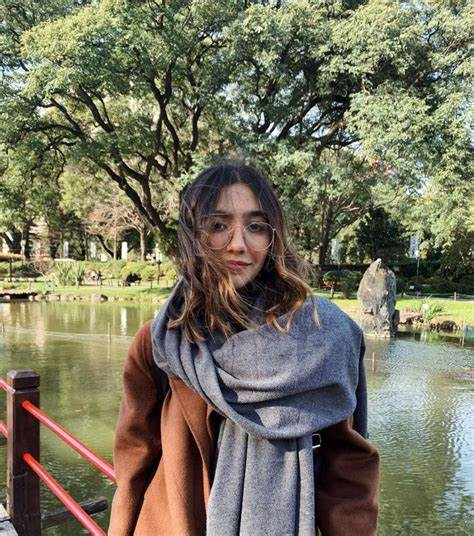

AnaVitoria é uma dupla brasileira de música popular formada por Ana Caetano e Vitória Falcão. Conhecidas por suas vozes harmoniosas e composições emocionantes, elas conquistaram o coração do público com uma mistura única de MPB, pop e influências regionais.
Ana e Vitória se conheceram em Belo Horizonte, Minas Gerais, onde ambas cresceram e foram influenciadas pela rica cultura musical da região. Desde cedo, elas compartilhavam uma paixão pela música e começaram a compor juntas ainda na adolescência. A química entre as duas era tão natural que decidiram formar uma dupla.
Em 2018, o AnaVitoria lançou seu primeiro álbum, intitulado "AnaVitoria", que marcou a estreia oficial da dupla no cenário musical. O álbum foi um sucesso instantâneo, com destaque para as faixas "Segue a Vida" e "Pra Gente Acordar", que conquistaram milhões de streams e fizeram a dupla ganhar visibilidade nacional.
Desde então, o AnaVitoria vem se consolidando como uma das duplas mais promissoras da música brasileira. Alguns marcos importantes incluem:
O som do AnaVitoria é uma fusão de influências que vão da MPB clássica ao pop contemporâneo. Suas letras falam de amor, autoconhecimento, superação e as nuances da vida, sempre com um toque poético e sensível.

Ana Caetano
Vitória Falcão
O AnaVitoria continua em ascensão, com novos projetos e turnês. Em 2023, elas lançaram o álbum "Esquinas", que promete conquistar ainda mais fãs e consolidar seu lugar no cenário musical.